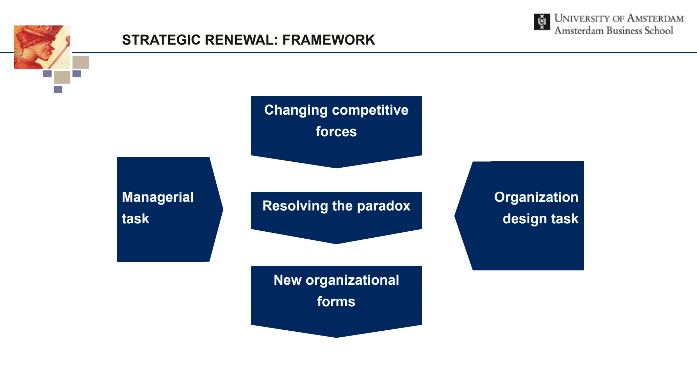

The framework
| Organizational form | Environment and response | Capabilities and design |
|---|---|---|
| Rigid | Stable, relatively simple and predictable conditions. Strategic programming and routines dominate. | Limited management repertoire; low maneuverability; mechanistic structure and conservative culture. |
| Planned | More dynamic and complex conditions that remain sufficiently predictable. Planning coordinates a response. | Operational flexibility; a moderate management repertoire and maneuverability. |
| Flexible | Hypercompetition: dynamic, complex and unpredictable conditions. Adaptation and learning become central. | Operational, structural and strategic flexibility; broad repertoire and high maneuverability; organic, innovative design. |
| Chaotic | Extremely turbulent conditions. Ad hoc problem solving and spontaneous responses dominate. | Broad repertoire but low maneuverability in the lecture’s summary matrix. A surplus of strategic flexibility need not produce coordinated action. |
Key distinctions
Actual versus potential flexibility
Actual flexibility concerns management capabilities: operational flexibility changes the volume or mix of activities; structural flexibility changes how activities are organized; strategic flexibility changes the organization’s direction. Potential flexibility concerns maneuverability created by technology, structure and culture.
Run a flexibility audit
The lecture compares required flexibility, derived from environmental scanning, with actual management capabilities and potential maneuverability. Gaps inform change trajectories, followed by attention to people, resources, time and evaluation.
How to use it
- Describe the environment’s dynamism, complexity and predictability.
- Identify the required operational, structural and strategic responses.
- Assess the organization’s current repertoire and maneuverability.
- Specify a change trajectory with resources, timing and evaluation criteria.
Keep in mind
The four forms are ideal types. An organization may contain different forms across units, and the same form can be appropriate in one environment and unsuitable in another.
Why is a broad management repertoire not enough?
Reveal the explanation
Managers also need organizational maneuverability. Technology, structure and culture can prevent intended responses from being implemented.
Read the classroom original
Complete pages from the supplied lecture slides. Select a page to read, enlarge or browse its extracted text. Page numbers refer to the PDF’s physical page order.
